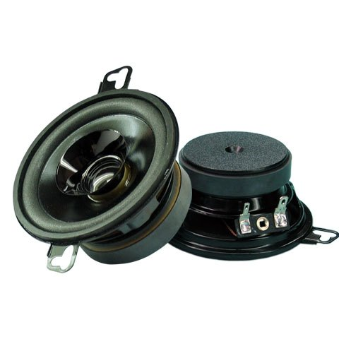

CAR AUDIO
SA0313
技术参数 ＋
- Dimension
- 3.5″（Φ87mm）
- Impedance
- 4Ω
- Nom Power
- 20W
- Max Power
- 35W
- SPL
- 87dB
- Freq Range
- 120-18KHZ
- VC Size
- Φ20mm(0.75in)
- Magnet Weight
- 4.15 OZ
- Cone Body
- PP
- Cone Edge
- Foam
- Frame Material
- Steel